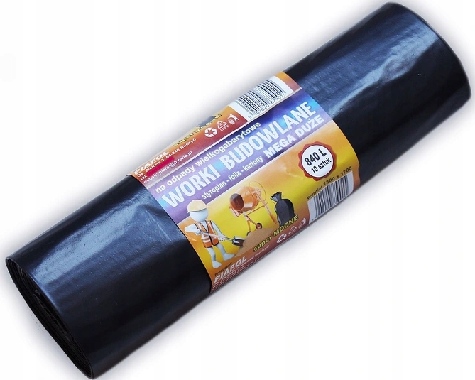

Worki budowlane 840 l
Czarne, mocne worki wykonane w 100% z materiału z recyklingu. Do styropianu, lekkich odpadów budowlanych i utrzymania porządku na stanowisku pracy.
- Wymiary
- 1300 x 1700 mm
- Grubość
- 50 mikronów
- Opakowanie
- 10 sztuk na rolce
- Pojemność
- 840 litrów